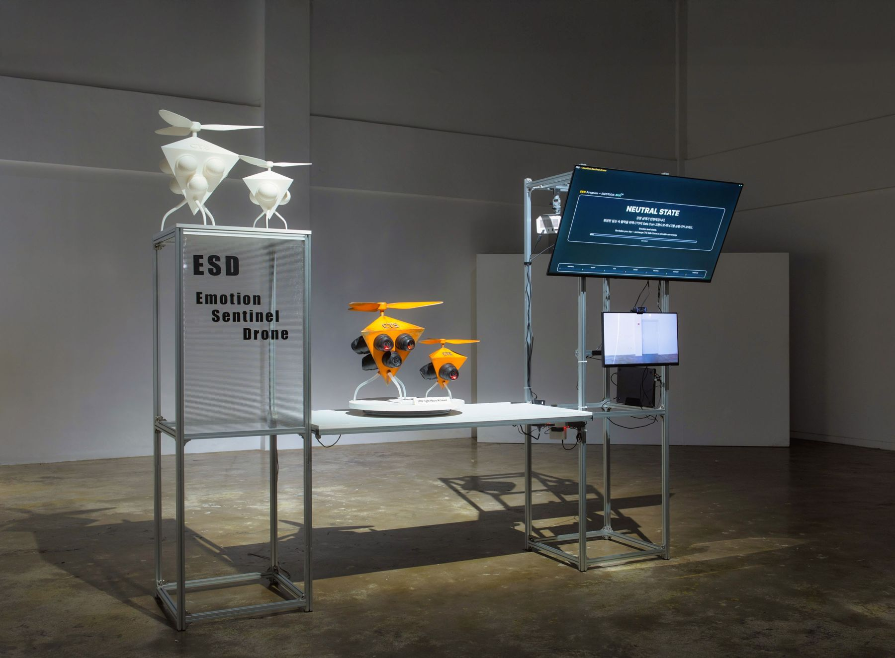

Zone 01 · ESD
감정수집 드론 체험 존
Emotion Sentinel Drone Zone
드론에 장착된 카메라가 방문객의 표정과 시선을 실시간으로 분석합니다. 분석된 감정은 색상과 수치로 화면에 표시되고, 감정 상태에 맞는 안정화 가이드가 함께 제공됩니다.
Cameras mounted on the drones analyze visitors’ expressions and gaze in real time. Emotions appear on screen as colors and figures, followed by a calming guide.
제품 보기 →